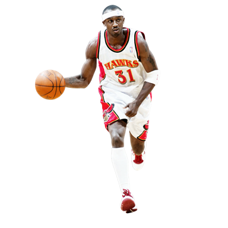
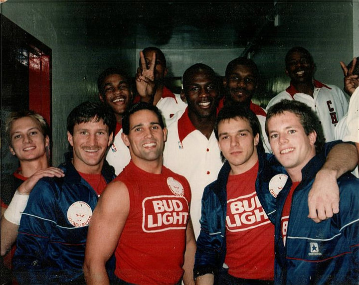
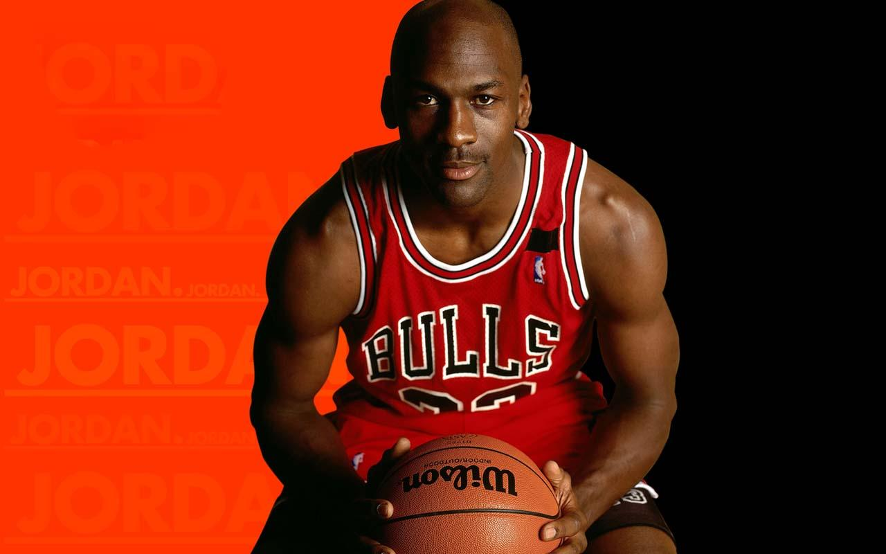

Professional Career :
Early NBA years(1984-1987)During his rookie season in the NBA, Jordan averaged 28.2 ppg on 51.5% shooting.He quickly became a fan favorite even in opposing arenas, and appeared on the cover of Sports Illustrated with the heading "A Star Is Born" just over a month into his professional career. Jordan was also voted in as an All-Star starter by the fans in his rookie season. Controversy arose before the All-Star game when word surfaced that several veteran players—led by Isiah Thomas—were upset by the amount of attention Jordan was receiving. This led to a so-called "freeze-out" on Jordan, where players refused to pass the ball to him throughout the game. The controversy left Jordan relatively unaffected when he returned to regular season play, and he would go on to be voted Rookie of the Year.The Bulls finished the season 38–44 and lost to the Milwaukee Bucks in four games in the first round of the playoffs. |
 |
First three-peat(1991-1993)In the 1990–91 season, Jordan won his second MVP award after averaging 31.5 ppg on 53.9% shooting, 6.0 rpg, and 5.5 apg for the regular season. The Bulls finished in first place in their division for the first time in 16 years and set a franchise record with 61 wins in the regular season. With Scottie Pippen developing into an All-Star, the Bulls had elevated their play. The Bulls defeated the New York Knicks and the Philadelphia 76ers in the opening two rounds of the playoffs. |
 |
"I'm back": Return to the NBA (1995)In the 1993–94 season, the Bulls, without Jordan, achieved a 55–27 record, and lost to the New York Knicks in the second round of the playoffs. But the 1994–95 Bulls were a shell of the championship team of just two years earlier. Struggling at mid-season to ensure a spot in the playoffs, Chicago was 31–31 at one point in mid-March.The team received help, however, when Jordan decided to return to the NBA for the Bulls. |
 |